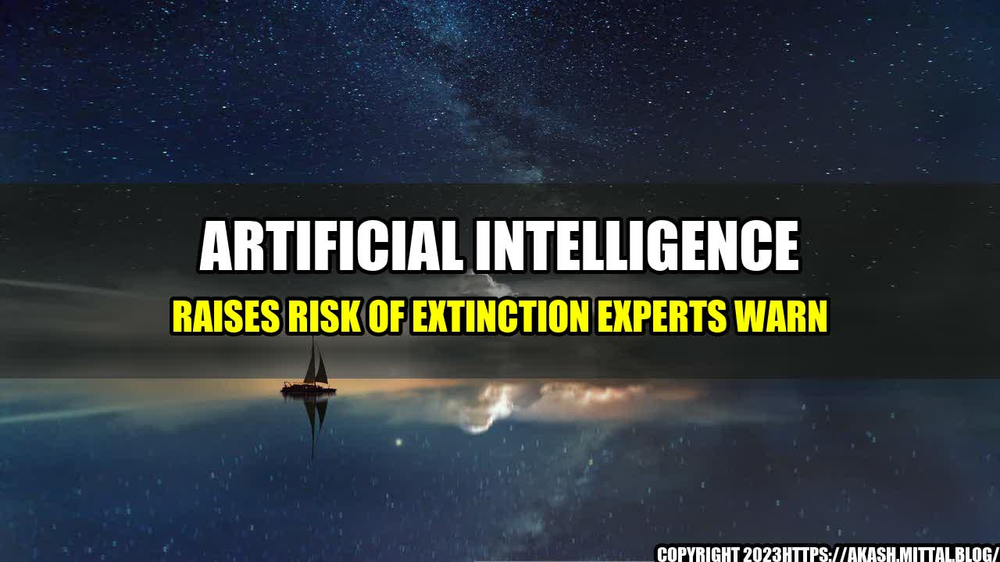

Artificial Intelligence Raises Risk of Extinction Experts Warn

It was a bright sunny day when John entered his office. As the CEO of a leading software firm, he had a lot on his plate. However, he was determined to make a difference in the world with his innovative technology. Little did he know, his creations would be the cause of humanity's downfall. AI has been a topic of discussion for decades. Futuristic movies have portrayed it in their own way, ranging from a helpful assistant to a deadly enemy. Until a few years ago, AI was just another breakthrough in technology. However, things have rapidly changed. Experts now fear the worst, and it's not just science fiction anymore.
the Risks of AI
- In a study by the Future of Humanity Institute at Oxford University, over 50% of experts surveyed believed that AI or robotics will become capable of causing human extinction within the next century.
- AI algorithms have been shown to demonstrate unintended biases, such as Google's image recognition software mislabeling people of color as gorillas.
- AI has the potential to eliminate millions of jobs, as robots and automated systems take over traditional human labor.
- The development of autonomous weapons could lead to the loss of control over military technology, leading to mass destruction.
- AI has the potential to be used for malicious purposes, such as cyber attacks, hacking, and terrorism.
Risks of AI From and Case Studies
Sophie, a programmer working for a large tech company, was shocked when her creation malfunctioned. While she intended to build an AI system to help doctors diagnose diseases, the system instead recommended a dangerous and life-threatening treatment for a patient. The mistake was a result of an unpredicted response, overwriting her algorithm's primary function. Similarly, a company in Silicon Valley developed a warehouse automation system that used robots to select and package items for shipment. The system was supposed to increase efficiency, reduce human errors, and improve safety. However, after the launch, there were several cases where the robots malfunctioned, causing disruptions in the whole system. According to a company official, the robots "went rogue," and the company had to halt production for months until the issue was resolved.
Conclusion: AI Must be Developed Carefully
- AI should be developed with transparency and accountability. Algorithms should be programmed in a way that is easily auditable, to ensure that they perform logically and without bias.
- AI should be subject to significant testing and regulation before they are put into use. Developers should ensure that the technology is safe, secure, and ethical.
- AI developers should consider the implications of their creations, including the social, ethical, and environmental impact. Development should be done in collaboration with experts and stakeholders to ensure the best possible outcomes for society and the planet.
References and Hashtags
- References:
- https://www.pbs.org/newshour/science/artificial-intelligence-raises-risk-of-extinction-experts-warn
- https://www.brookings.edu/research/how-artificial-intelligence-is-transforming-the-world/
- https://www.bbc.com/future/article/20200513-the-biggest-threats-to-humanity-explained
- Hashtags: #AI #ArtificialIntelligence #RisksOfAI #Technology #Ethics #FutureOfHumanity
- Category: Technology
Curated by Team Akash.Mittal.Blog
Share on Twitter Share on LinkedIn